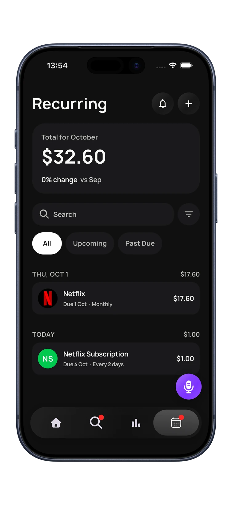

How to save money for Christmas is a question most people ask in November, when the season is close and the money isn't there yet. The good news: six weeks is enough to make a real dent. This guide shows how to save money for Christmas from where you are today, with a paycheck-by-paycheck plan, a worked example with the math, and a simple way to start next year's fund so you're not here again.
Why saving now beats paying it off later
Many people plan to cover the gap with a card. ICSC's 2026 Holiday Intentions survey found that 49% of US consumers expect to borrow to cover holiday purchases they can't pay for in full, and 23% expect to still be paying for this year's holidays in 2027 (ICSC, October 2026).
Every dollar you save before December is a dollar that doesn't carry interest into spring. Even if you can't save the whole amount, saving part of it shrinks what's left to borrow.
Step 1: How much should you save for Christmas?
Start with your total, not your savings. If you haven't set one yet, our guide on how much to spend on Christmas gifts walks through it. Your total should include food, travel, wrapping and events, not just presents.
Then work out the gap:
- Christmas total (everything you expect to spend)
- Minus what you've already set aside
- = the amount you need to save
If the gap looks impossible, lower the total now. It's much easier to cut a gift list in November than to pay off a balance in March.
Step 2: Split the gap across your remaining paychecks
Count the paydays between today and the week before Christmas. Counting from November 9, that's usually about six if you're paid weekly, or three if you're paid every two weeks. Divide the gap by that number. That's your Christmas savings per paycheck.
Move it on payday, before anything else. Money that sits in your checking account tends to get spent, so a separate savings account (or a sub-account at your bank, if it offers one) works best. Set up an automatic transfer if you can.
Step 3: Find the money in what you already spend
Most of the money you need is already leaving your account. The trick is to see where. Look at your last month of spending and check these first:
- Subscriptions you don't use. Pause or cancel anything you haven't opened in a month. Our subscription audit takes about 20 minutes.
- Eating out and delivery. This is usually the biggest flexible line. Cutting back for six weeks, not forever, is easier to stick to.
- The pantry and freezer. Plan one or two weeks of meals around what you already have, and move the grocery money you didn't spend.
- Stuff you don't use. Selling a few unused items online can add up quickly before the holidays.
- A short no-spend stretch. A week or two of only essentials can free a surprising amount. Here's how to do a no-spend challenge that sticks.

A Christmas savings plan example (with the math)
Say your Christmas total is $800 and you've already saved $200. You're paid every two weeks, with 3 paydays left before Christmas.
- Gap: $800 − $200 = $600
- Per paycheck: $600 ÷ 3 = $200
Now find the $600 over the next six weeks:
| Source | How | Saved |
|---|---|---|
| Eating out | Cut $60 a week for 6 weeks | $360 |
| Groceries | One pantry week saves $80 | $80 |
| Subscriptions | Cancel two at $25 a month for 2 months | $50 |
| Selling unused items | A jacket, a speaker and a few games | $120 |
That's $360 + $80 + $50 + $120 = $610, a little over the $600 gap. The extra $10 is your buffer for wrapping paper or a last-minute card.
If you're paid weekly instead, it's $600 ÷ 6 = $100 per paycheck. Same total, smaller transfers.
How to save money for Christmas gifts once you start shopping
Saving is half of it. The other half is not spending more than you planned:
- Give every person a number before you buy, and write it down.
- Suggest a gift exchange or a spending cap with friends or extended family. Most people are relieved someone asked.
- Buy from a list, not from a feed. Sales are only savings if the item was already on your list. Our guide to budgeting for Black Friday covers how to set a ceiling.
- Track as you go, so you know what's left before you check out, not after.
Keep it on track in BudgetGo
A savings plan works when you can see your spending week by week. Here's how BudgetGo helps.

- Plan the season in your one budget. BudgetGo runs one active budget at a time. For November and December, lower your eating-out allocation and give gifts their own share. Prefer not to budget? Tracking-only mode still shows where the money goes.
- See where the cash is. Analytics shows your top merchants and cash flow (money in vs money out), which is often where the $60 a week hides.
- Catch renewals early. Subscriptions and bills show up under Due this week, so you can cancel before the next charge.
- Log every purchase. Card payments can come in from linked banks, Apple Pay and bank SMS automations. Use voice entry for cash and market stalls. See how to track spending without a spreadsheet.
How to save money for Christmas next year
The easiest Christmas to pay for is the one you save for all year. In January, take this year's real total and divide it by 12. An $800 Christmas works out to about $66.67 a month, or about $30.77 per paycheck if you're paid every two weeks (26 paydays). That's a sinking fund: a small, regular amount for a cost you know is coming.
If you like a challenge, the 52-week savings challenge saves $1 in week one, $2 in week two, and so on up to $52. That adds up to $1,378 by the end of the year. Start it in January and it lands just before the holidays.
Frequently asked questions
How much should I save for Christmas?
Save the gap between your Christmas total and what you already have set aside. Set the total from what you can pay for by the end of December without new debt, and include food, travel and wrapping, not just gifts.
Is it too late to save money for Christmas in November?
No. With about six weeks left, divide what you need by your remaining paydays and move that amount on each payday. If the number is too high, lower your total now rather than borrowing later.
What's the best way to save money for Christmas?
Keep it in a separate savings account, move money on payday automatically, and fund it from spending you can cut for a few weeks, such as eating out and unused subscriptions.